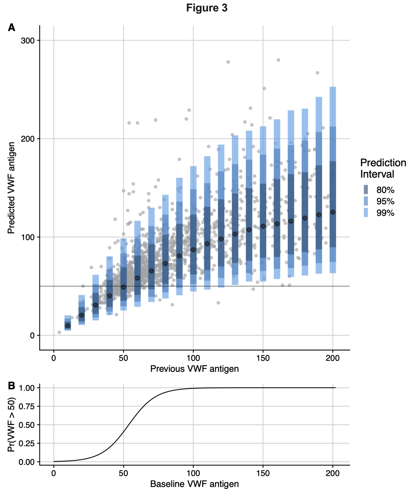
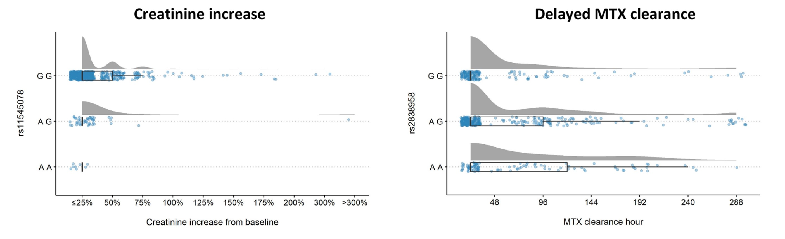
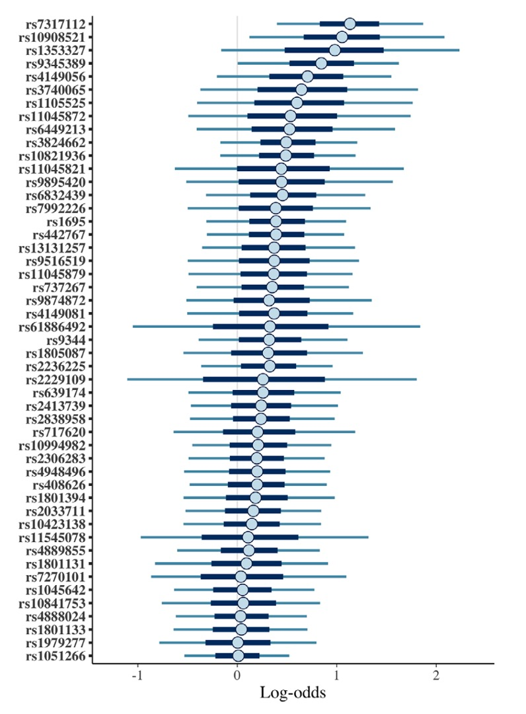

Research Projects
Spotlight Publications
Initial von Willebrand factor antigen values in adolescent females predict future values.

TL;DR: We modeled future von Willebrand Factor (VWF) levels based on previous VWF levels and other covariates to describe a decision threshold for retesting for von Willebrand disease (VWD) in adolescent females. We found that for an initial level of 80%, there was around an 8% chance the patient could still be found to have VWD, and at an initial level of 90%, there was around a 3% chance of VWD on retesting. These findings can help physicians decide who and when to retest for VWD. I made the above graph and find it quite pleasing.
Citation: Cohen CT, Zobeck M*, Powers JM. Initial von Willebrand factor antigen values in adolescent females predict future values. Haemophilia 2023;29:1547–55. https://doi.org/10.1111/hae.14865. (*I was co-first author)
Novel and replicated clinical and genetic risk factors for toxicity from high-dose methotrexate in pediatric acute lymphoblastic leukemia

TL;DR: We described single nucleotide polymorphisms that were associated with creatinine increased after high-dose methotrexate or with delayed methotrexate clearance. Some of these associations had not been previously described, others replicated previous findings (a rarity in the pharmacogenomics literature!). This project advance our understanding of who is at most risk for methotrexate toxicity and will hopefully help with the development of strategies to avoid toxicities before they develop. I made the above graphics for the paper and really like style.
Citation: Zobeck M, Bernhardt MB, Kamdar KY, Rabin KR, Lupo PJ, Scheurer ME. Novel and replicated clinical and genetic risk factors for toxicity from high-dose methotrexate in pediatric acute lymphoblastic leukemia. Pharmacotherapy: The Journal of Human Pharmacology and Drug Therapy 2023;43:205–14. https://doi.org/10.1002/phar.2779.
Novel risk factors for glucarpidase use in pediatric acute lymphoblastic leukemia: Hispanic ethnicity, age, and the ABCC4 gene

TL;DR: We described single nucleotide polymorphisms that were associated with nephrotoxicty from high-dose methotrexate that was severe enough to require glucarpidase, an extremely expensive drug that helps us avoid kidney failure from methotrexate. We found a novel association between a variant in the ABCC4 gene and requiring glucarpidase (this association was reproduced in the other methotrexate study above). We also found that Hispanic patients are at much higher risk for requiring glucarpidase compared to non-Hispanic patients, an association we are still trying to unravel.
Citation: Zobeck M, Bernhardt MB, Kamdar KY, Rabin KR, Lupo PJ, Scheurer ME. Novel risk factors for glucarpidase use in pediatric acute lymphoblastic leukemia: Hispanic ethnicity, age, and the ABCC4 gene. Pediatric Blood & Cancer 2021;68:e29036. https://doi.org/10.1002/pbc.29036.
Other Publications
For most of these, I served as the primary analyst who conducted the statistical analysis and helped to interpret the results.
McEvoy MT, Siegel DA, Dai S, Okcu MF, Zobeck M, Venkatramani R, et al. Pediatric rhabdomyosarcoma incidence and survival in the United States: An assessment of 5656 cases, 2001–2017. Cancer Medicine 2023;12:3644–56. https://doi.org/10.1002/cam4.5211.
Holmes DM, Matatiyo A, Mpasa A, Huibers MHW, Manda G, Tomoka T, et al. Outcomes of Wilms tumor therapy in Lilongwe, Malawi, 2016–2021: Successes and ongoing research priorities. Pediatric Blood & Cancer 2023;70:e30242. https://doi.org/10.1002/pbc.30242.
Harris RD, Bernhardt MB, Zobeck M, Taylor OA, Gramatges MM, Schafer ES, et al. Ethnic-specific predictors of neurotoxicity among patients with pediatric acute lymphoblastic leukemia after high-dose methotrexate. Cancer 2023;129:1287–94. https://doi.org/10.1002/cncr.34646.
Cohen CT, Zobeck M, Kim TO, Sartain SE, Raffini L, Srivaths L. Adolescent acquired thrombotic thrombocytopenic purpura: An analysis of the Pediatric Health Information System database. Thrombosis Research 2023;222:63–7. https://doi.org/10.1016/j.thromres.2022.12.011.
Cohen CT, Zobeck M, Han H, Spinner JA, Powers JM, Lee-Kim Y, et al. Bleeding outcomes and management of supratherapeutic episodes secondary to warfarin in children: A single center 10-year experience. Thrombosis Research 2023;228:148–50. https://doi.org/10.1016/j.thromres.2023.06.013.
Prudowsky ZD, Bledsaw K, Staton S, Zobeck M, DeJean J, Johnson-Bishop L, et al. Chlorhexidine gluconate (CHG) foam improves adherence, satisfaction, and maintains central line associated infection rates compared to CHG wipes in pediatric hematology-oncology and bone marrow transplant patients. Pediatric Hematology and Oncology 2022;0:1–13. https://doi.org/10.1080/08880018.2022.2090644.
Howard TS, Valdes SO, Zobeck M, Lam WW, Miyake CY, Rochelson E, et al. Ripple mapping: A precise tool for atrioventricular nodal reentrant tachycardia ablation. Journal of Cardiovascular Electrophysiology 2022;33:1183–9. https://doi.org/10.1111/jce.15491.
Agarwal S, Cohen CT, Zobeck M, Jacobi PM, Sartain SE. Downregulation of thrombomodulin-thrombin-activated protein C pathway as a mechanism for SARS-CoV-2 induced endotheliopathy and microvascular thrombosis. Thrombosis Update 2022;8:100116. https://doi.org/10.1016/j.tru.2022.100116.
Mullikin D, Ranch D, Khalfe Y, Lucari B, Zobeck M, Assanasen C, et al. Hispanic ethnicity is associated with prolonged clearance of high dose methotrexate and severe nephrotoxicity in children and adolescents with acute lymphoblastic leukemia. Leukemia & Lymphoma 2020;61:2771–4. https://doi.org/10.1080/10428194.2020.1783445.
Knadler JJ, Zobeck M, Masand P, Sartain S, Kyle WB. In Utero Aortic Arch Thrombosis Masquerading as Interrupted Aortic Arch: A Case Report and Review of the Literature. Pediatr Cardiol 2019;40:658–63. https://doi.org/10.1007/s00246-019-02068-5.